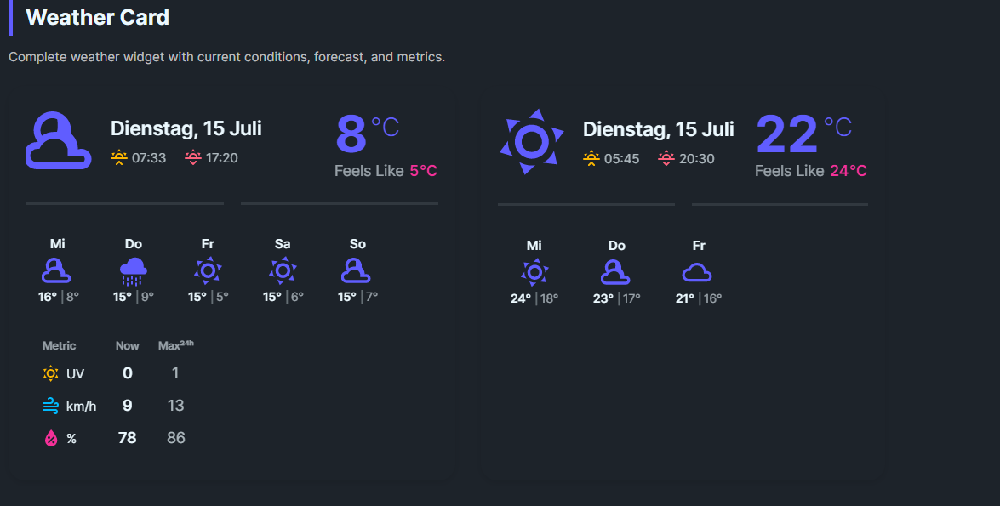

DaisyWeatherCard
Overview

DaisyWeatherCard is a flexible container that combines multiple weather display components. You can show/hide sections as needed and either bind data manually or provide an IWeatherService implementation for automatic fetching.
Properties
Current Weather
| Property |
Type |
Default |
Description |
Temperature |
double |
0 |
Current temperature value |
FeelsLike |
double |
0 |
"Feels like" temperature |
Condition |
WeatherCondition |
Unknown |
Current weather condition |
Date |
DateTime |
DateTime.Now |
Date/time of the reading |
Sunrise |
TimeSpan |
- |
Sunrise time |
Sunset |
TimeSpan |
- |
Sunset time |
Forecast
| Property |
Type |
Default |
Description |
Forecast |
IEnumerable |
null |
Collection of forecast days |
Metrics
| Property |
Type |
Default |
Description |
UvIndex |
double |
0 |
Current UV index |
UvMax |
double |
0 |
Maximum UV for the day |
WindSpeed |
double |
0 |
Current wind speed |
WindMax |
double |
0 |
Maximum wind speed |
WindUnit |
string |
"km/h" |
Wind speed unit |
Humidity |
int |
0 |
Current humidity percentage |
HumidityMax |
int |
0 |
Maximum humidity |
Configuration
| Property |
Type |
Default |
Description |
TemperatureUnit |
string |
"C" |
Temperature unit (C or F) |
ShowCurrent |
bool |
true |
Show current weather section |
ShowForecast |
bool |
true |
Show forecast section |
ShowMetrics |
bool |
true |
Show metrics section |
ShowSunTimes |
bool |
true |
Show sunrise/sunset times |
DateFormat |
string |
"dddd, d MMMM" |
Date display format (e.g., "ddd, d MMM" for short) |
Size |
DaisySize |
Medium |
Control size (ExtraSmall, Small, Medium, Large, ExtraLarge) |
Service Integration
| Property |
Type |
Default |
Description |
WeatherService |
IWeatherService |
null |
Weather data provider |
Location |
string |
null |
Location for data fetching |
ForecastDays |
int |
5 |
Number of forecast days |
IsLoading |
bool |
false |
Whether data is being loaded |
ErrorMessage |
string? |
null |
Error message if fetch failed |
AutoRefresh |
bool |
false |
Auto-refresh at interval |
RefreshInterval |
TimeSpan |
30 min |
Time between refreshes |
Quick Examples
<!-- Manual binding - all sections -->
<controls:DaisyWeatherCard
Temperature="22"
FeelsLike="24"
Condition="Sunny"
TemperatureUnit="C"
ShowForecast="True"
ShowMetrics="True" />
<!-- Current weather only -->
<controls:DaisyWeatherCard
Temperature="18"
Condition="PartlyCloudy"
ShowForecast="False"
ShowMetrics="False" />
<!-- With forecast binding -->
<controls:DaisyWeatherCard
Temperature="{Binding CurrentTemp}"
Condition="{Binding CurrentCondition}"
Forecast="{Binding ForecastDays}" />
<!-- With service integration -->
<controls:DaisyWeatherCard
WeatherService="{Binding MyWeatherService}"
Location="London, UK"
ForecastDays="7"
AutoRefresh="True"
RefreshInterval="00:15:00" />
IWeatherService Interface
To use automatic data fetching, implement IWeatherService:
public interface IWeatherService
{
Task<CurrentWeather> GetCurrentWeatherAsync(string location, CancellationToken token);
Task<IEnumerable<ForecastDay>> GetForecastAsync(string location, int days, CancellationToken token);
Task<WeatherMetrics> GetMetricsAsync(string location, CancellationToken token);
}
An OpenWeatherMapService implementation is provided as a reference.
Refresh Methods
// Manually trigger a refresh
await weatherCard.RefreshAsync();
ForecastDay Model
public class ForecastDay
{
public DateTime Date { get; set; }
public WeatherCondition Condition { get; set; }
public double HighTemperature { get; set; }
public double LowTemperature { get; set; }
public int PrecipitationChance { get; set; }
}